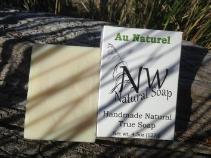
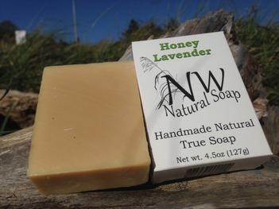
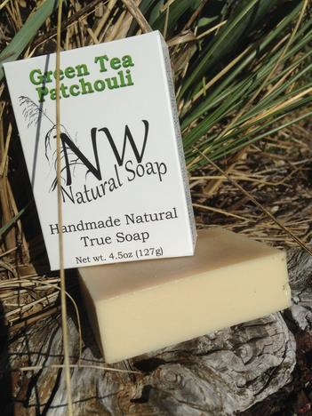

Au Naturel
Our Au Naturel soap is just that. No added colors, scents, or oils are added, providing a gentle cleansing soap that is safe for sensitive skin.
Ingredients: Pure olive oil, distilled water, coconut oil, palm kernel oil, lye (required for true soap), castor oil, rosemary leaf, and vitamin E.
$5.00
Honey Lavender
Honey Lavender is a wonderful blend of goodness! Considered to be antioxidant rich, a natural antibacterial and a humectant (attracting and retaining moisture) honey is one of the most healthful additives for soap! Lavender is thought to soothe the skin, promote healing and reduce redness. This soap leaves your skin moist and smooth.
Ingredients: Pure olive oil, distilled water, coconut oil, palm kernel oil, lye (required for true soap), castor oil, buckwheat honey, lavender (Bulgarian) essential oil.
$6.50
Lemongrass

Lemongrass is a bright citrusy essential oil considered to provide antifungal, antibacterial, and anti-inflammatory protection to name a few.
Ingredients: Pure olive oil, distilled water, coconut oil, palm kernel oil, lye (required for true soap), shea butter, castor oil, lemongrass essential oil, rosemary leaf, vitamin E.
$5.00
Green Tea Patchouli
Our research has found this to be a surprisingly popular blend! Patchouli, known for its strong earthy fragrance, may have positive physical and emotional benefits when incorporated into a natural skin care routine. Current research suggests health benefits of using green tea on skin, primarily with an antioxidant focus.
Ingredients: Pure olive oil, green tea, coconut oil, palm kernel oil, lye (required for true soap), castor oil, patchouli essential oil, rosemary leaf, vitamin E.
$5.00